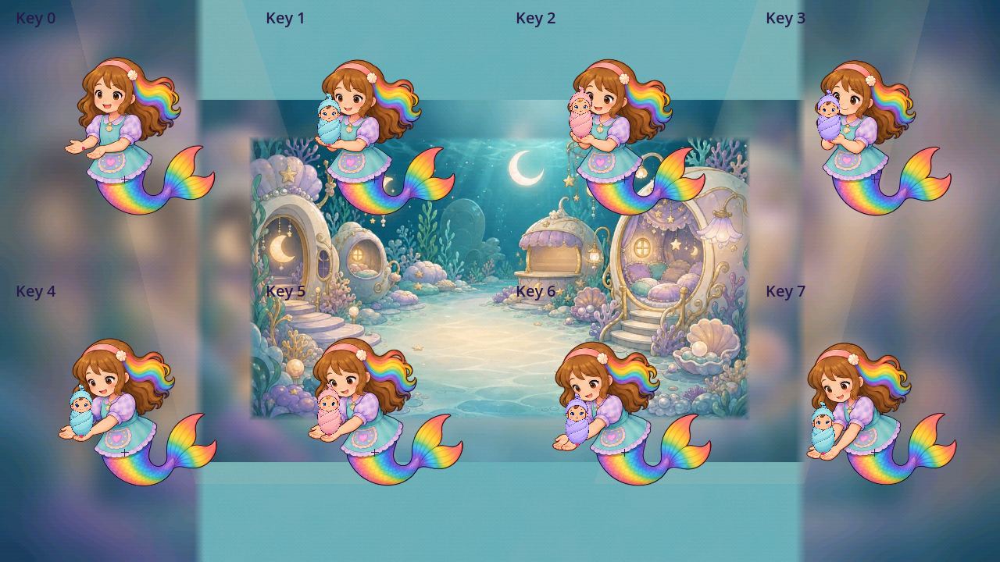
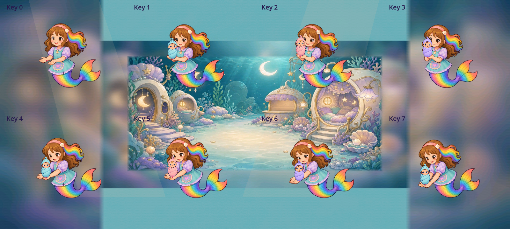
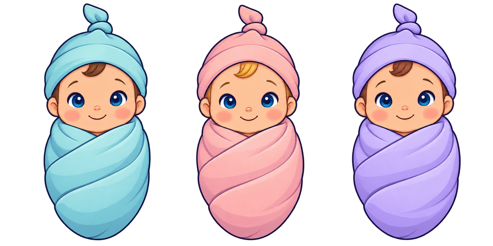

Three nursery infant refinement candidates
Three fresh alternatives address the specifically measured nursery style gap. Original source files and all native generated pixels remain unchanged. Each source-style opinion is 4.6/5; no runtime or owner acceptance follows from it.
Native generation and prompt hashes · Existing source inventory · Exact source packing / support metadata · Individual reviews · Current nursery action4.2 review
D2A-0391 · Aqua infant
Preserved original · 4.3 mounted

New candidate · 4.6 source style
The aqua wrapping preserves the first infant identity. Broad blue-green folds and a clear brown forelock replace fine fabric and facial rendering; a round calm face and closed swaddle remain readable.
Static held-fit opinion: 4.6/5. Live mounted/action score pending; current bindings remain on the original infant.
D2A-0392 · Pink infant
Preserved original · 4.3 mounted

New candidate · 4.6 source style
The pink wrapping and golden forelock preserve the second identity. The same soft rounded head, simple smile and broad painted folds match the family without losing the warm color contrast.
Static held-fit opinion: 4.6/5. Live mounted/action score pending; current bindings remain on the original infant.
D2A-0393 · Violet infant
Preserved original · 4.3 mounted

New candidate · 4.6 source style
The violet wrapping and brown forelock preserve the third identity. Its distinct cool color, navy contour and uncomplicated blue eyes read clearly beside the aqua and pink siblings.
Static held-fit opinion: 4.6/5. Live mounted/action score pending; current bindings remain on the original infant.
Native held-pose fits
Each infant has a provisional4.6 held-fit opinion. These are separately staged held poses, with no live binding or played-action acceptance.


Untouched native generation

Source-only1024px review keys consume12MiB decoded RGBA if loaded together. Production sizing, GPU residency and phone performance must be reviewed before binding.80px candidate card extent produces roughly67px painted height; it is the extent used in these native held fits; live interaction remains unverified.